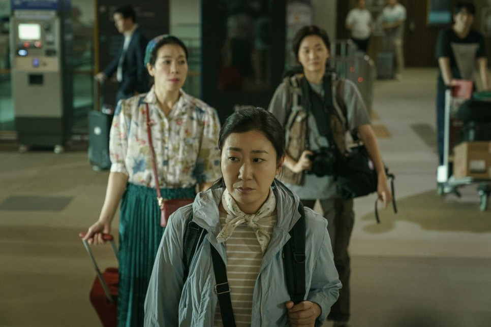

-
-
-
#서울의봄
#사카모토류이치
#상영예정작
#불사조
#화제의 게시글
#추리영화
#애니메이션
#빌런
#지브리
#영화감상
#영화추천
#한국영화
#액션영화
상상력이 많으면 그 인생 고달퍼
새하얀 수건을 쓰는 마음으로 일기를 적는다. 미용실 같은 곳에선 짙은 회색이나 갈색 수건을 주로 사용하지만, 집에서만큼은 하얀 수건을 쓰는 마음으로.
댓글 0 | 3시간 전 | by 이재이

경찰 없이 직접 내 손으로 잡는다!
영화<시민덕희>리뷰 | 박영주 감독의 <시민덕희>는 1월 24일 개봉했다. 2016년 경기도 화성시의 세탁소 주인 김성자씨의 실화를 바탕으로 한 영화이다.
댓글 0 | Jan 29.2024 | by 민드레
외계+인 2부, 찔러보기
복고풍의 타임슬립과 액션, SF그래픽, 외계인, 코미디. 트렌드 역행작 | 요새는 해외개봉과 더불어 OTT같은 스트리밍 시장에서 좋은 반응을 거두어야만.
댓글 0 | Jan 29.2024 | by Roman
화창한 날은 오래가지 않아
두 눈을 감고있다. 보리수 나무 아래 수많은 갈래로 뻗어 나온 뿌리가 감싼 얼굴은 평온하기 그지없다. 미세하게 열린 눈꺼풀 사이 보이지 않는 눈동자는 어딜 향해 있는지.
댓글 18 | Jan 28.2024 | by Bono
괴물후기 (스포주의)
가여운 아들 사오리의 남편은 불륜여행을 갔다가 사고로 죽었다. 그래서인지 사오리는 아들이 혹시나 잘못될까봐 노심초사하고있다. 생계도 꾸려야하고 살림도 살아야한다.
댓글 0 | Jan 26.2024 | by 포말